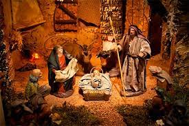

¿Por qué existe?
La Navidad es una celebración para conmemorar el nacimiento de Jesús de Nazaret. Esta celebración es central para el cristianismo y también ha influido en muchas otras culturas a través de la historia.
Tradiciones
Muchas personas celebran la Navidad con regalos, comidas especiales, decoraciones, y reuniones con la familia y los amigos. Esta es una ocasión para pasar tiempo con los seres queridos, recordar las enseñanzas de Jesús, y reflexionar sobre el significado de la vida.
Mi día
A menudo paso el día con mi familia. Comenzamos cocinando una comida especial para compartir. Luego nos reunimos para abrir regalos, cantar villancicos y compartir historias. A veces también salimos a pasear por el vecindario para ver las hermosas decoraciones navideñas.